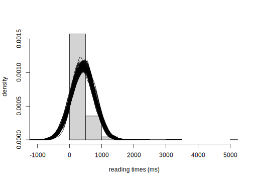
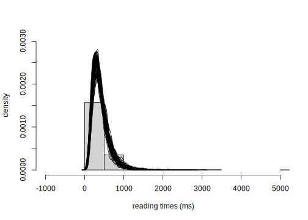

8.8 Using the package designr to simulate data and compute power
There are major advantages to writing one’s own code for generating repeated measures data: one can control exactly what one considers to be the generative process, and one can obtain a deeper understanding of how the linear mixed model is set up. However, for certain standard experimental designs, one can use pre-defined functions for simulating data. The advantage of using such packages is that one can abstract away from the implementation details; but this can also be a disadvantage because one might end up simulating data without really understanding the assumptions behind the data-generative process.
An R package, designr, provides some built-in functions that can simplify the process of computing power for standard repeated measures designs. For example, consider again the two-condition design involving English relative clauses that we saw earlier (Grodner and Gibson 2005).
8.8.1 Simulating data with two conditions
First, load the data, and prepare the contrast coding and log-transform the reading times.
gg05e1<-read.table("data/grodnergibsonE1crit.txt",header=TRUE)
gg05e1$so <- ifelse(gg05e1$condition=="objgap",1/2,-1/2)
gg05e1$logrt<-log(gg05e1$rawRT)Next, we fit a linear mixed model to the data. As an example, we use raw reading times on the millisecond scale.
## boundary (singular) fit: see ?isSingular## Linear mixed model fit by REML. t-tests use
## Satterthwaite's method [lmerModLmerTest]
## Formula:
## rawRT ~ so + (1 + so | subject) + (1 + so | item)
## Data: gg05e1
##
## REML criterion at convergence: 9645
##
## Scaled residuals:
## Min 1Q Median 3Q Max
## -2.392 -0.337 -0.127 0.131 12.504
##
## Random effects:
## Groups Name Variance Std.Dev. Corr
## subject (Intercept) 24152 155.4
## so 27603 166.1 1.00
## item (Intercept) 2246 47.4
## so 7663 87.5 1.00
## Residual 89503 299.2
## Number of obs: 672, groups: subject, 42; item, 16
##
## Fixed effects:
## Estimate Std. Error df t value Pr(>|t|)
## (Intercept) 420.2 29.1 43.6 14.4 <2e-16
## so 102.3 40.9 32.1 2.5 0.018
##
## Correlation of Fixed Effects:
## (Intr)
## so 0.734
## optimizer (nloptwrap) convergence code: 0 (OK)
## boundary (singular) fit: see ?isSingularThe correlations between the varying intercepts and slopes could not be estimated, so the model is over-parameterized. We can refit the model without correlations:
## Linear mixed model fit by REML. t-tests use
## Satterthwaite's method [lmerModLmerTest]
## Formula:
## rawRT ~ so + (1 + so || subject) + (1 + so || item)
## Data: gg05e1
##
## REML criterion at convergence: 9684
##
## Scaled residuals:
## Min 1Q Median 3Q Max
## -1.966 -0.325 -0.118 0.052 12.924
##
## Random effects:
## Groups Name Variance Std.Dev.
## subject (Intercept) 23574 153.5
## subject.1 so 22289 149.3
## item (Intercept) 1367 37.0
## item.1 so 3635 60.3
## Residual 93001 305.0
## Number of obs: 672, groups: subject, 42; item, 16
##
## Fixed effects:
## Estimate Std. Error df t value Pr(>|t|)
## (Intercept) 420.2 28.0 40.1 15.00 <2e-16
## so 102.3 36.2 24.0 2.82 0.0094
##
## Correlation of Fixed Effects:
## (Intr)
## so 0.000Next, we generate a data-frame through the designr package, with the same design as the data used above:
library(designr)
## example
## define data frame:
design<-fixed.factor("so", levels=c("subjgap", "objgap")) +
random.factor("subject", instances=42)+
random.factor("item", instances=16)
dat <- design.codes(design)
dat$so <- ifelse(dat$so=="objgap",1/2,-1/2)
head(dat)## # A tibble: 6 x 3
## subject item so
## <fct> <fct> <dbl>
## 1 subject01 item01 -0.5
## 2 subject01 item01 0.5
## 3 subject01 item02 -0.5
## 4 subject01 item02 0.5
## 5 subject01 item03 -0.5
## 6 subject01 item03 0.5To compute prospective power based on the estimates from the English relative clause data, the following for-loop is run. In each iteration, data is first generated using the design set up above; this is done using the simLMM function from the designr package. Notice here that a “maximal” model is specified, but the correlations are set to zero (CP=0.0); this has the effect that the data generated assume no correlation between the intercept and slope for subjects and items. Having generated the data, the lmer function is used to fit the model to the simulated data, and then the t-value of the slope is saved. This t-value can then be used to compute power in the usual way.
tvals<-rep(NA,100)
for(i in 1:100){
## generate data:
dat$ysim <- simLMM(formula = ~ 1 + so + (1 + so | subject) +
(1+so|item),
data = dat,
LMM = m_lmer,
CP = 0.0,
empirical=FALSE,verbose=FALSE,
family="gaussian")
## fit model to simulated data:
m<-lme4::lmer(ysim ~ so + (so || subject) + (so||item),
data=dat,
control=lmerControl(calc.derivs=FALSE))
## save t-value
tvals[i]<-summary(m)$coefficients[2,3]
}
mean(abs(tvals)>2)## [1] 0.91If we also want to examine the distribution of the data generated, and the distribution of the parameters under repeated sampling, we can easily record that information within the for-loop:
n<-dim(dat)[1]
nsim<-100
ysims<-matrix(rep(NA,n*nsim),ncol=nsim)
for(i in 1:100){
## generate data:
ysim <- simLMM(formula = ~ 1 + so + (1 + so | subject) + (1+so|item),
data = dat,
LMM = m_lmer,
CP = 0.0,
empirical=FALSE,verbose=FALSE,
family="gaussian")
## store simulated data:
ysims[,i]<-ysim
## add current simulated data to data-frame:
dat$ysim<-ysim
## fit model to simulated data:
m<-lme4::lmer(ysim ~ so + (so || subject) + (so||item),
data=dat,
control=lmerControl(calc.derivs=FALSE))
## save t-value
tvals[i]<-summary(m)$coefficients[2,3]
}
mean(abs(tvals)>2)## [1] 0.9hist(gg05e1$rawRT,freq = FALSE,ylab="density",
xlim=c(-1000,5000),
main="",xlab="reading times (ms)")
for(i in 1:100){
lines(density(ysims[,i]))
}
As the above plot shows, a model using raw readings times lead to predicted reading times including negative values, which is obviously implausible.
If we want to fit the model on log RTs, the code changes as follows. First, the model is fit to the data on the log ms scale:
## Linear mixed model fit by REML. t-tests use
## Satterthwaite's method [lmerModLmerTest]
## Formula:
## logrt ~ so + (1 + so || subject) + (1 + so || item)
## Data: gg05e1
##
## REML criterion at convergence: 704
##
## Scaled residuals:
## Min 1Q Median 3Q Max
## -2.960 -0.508 -0.131 0.278 6.125
##
## Random effects:
## Groups Name Variance Std.Dev.
## subject (Intercept) 0.10090 0.3176
## subject.1 so 0.04894 0.2212
## item (Intercept) 0.00127 0.0356
## item.1 so 0.00647 0.0805
## Residual 0.13063 0.3614
## Number of obs: 672, groups: subject, 42; item, 16
##
## Fixed effects:
## Estimate Std. Error df t value
## (Intercept) 5.8831 0.0517 42.1801 113.72
## so 0.1240 0.0485 28.6962 2.56
## Pr(>|t|)
## (Intercept) <2e-16
## so 0.016
##
## Correlation of Fixed Effects:
## (Intr)
## so 0.000The design remains unchanged; only the for-loop changes: the simLMM function is passed through the exp() function, to exponentiate the data generated on the log scale.
tvals<-rep(NA,100)
for(i in 1:100){
## generate data:
dat$ysim <- exp(simLMM(formula = ~ 1 + so + (1 + so | subject) + (1+so|item),
data = dat,
LMM = m_lmer,
CP = 0.0,
empirical=FALSE,verbose=FALSE,
family="gaussian"))
## fit model to simulated data:
m<-lme4::lmer(log(ysim) ~ so + (so || subject) + (so||item),
data=dat,
control=lmerControl(calc.derivs=FALSE))
## save t-value
tvals[i]<-summary(m)$coefficients[2,3]
}
mean(abs(tvals)>2)## [1] 0.75The model fit on log RTs produces much more realistic data:
n<-dim(dat)[1]
nsim<-100
ysims<-matrix(rep(NA,n*nsim),ncol=nsim)
for(i in 1:100){
## generate data:
ysim <- exp(simLMM(formula = ~ 1 + so + (1 + so | subject) +
(1+so|item),
data = dat,
LMM = m_lmer,
CP = 0.0,
empirical=FALSE,verbose=FALSE,
family="gaussian"))
## store simulated data:
ysims[,i]<-ysim
## add current simulated data to data-frame:
dat$ysim<-ysim
## fit model to simulated data:
m<-lme4::lmer(log(ysim) ~ so + (so || subject) + (so||item),
data=dat,
control=lmerControl(calc.derivs=FALSE))
## save t-value
tvals[i]<-summary(m)$coefficients[2,3]
}
mean(abs(tvals)>2)## [1] 0.76hist(gg05e1$rawRT,freq = FALSE,ylab="density",
xlim=c(-1000,5000),
main="",xlab="reading times (ms)",ylim=c(0,0.003))
for(i in 1:100){
lines(density(ysims[,i]))
}
8.8.2 Simulating data in factorial designs
The designr library can be used to generate data from typical factorial designs used in psychology and linguistics. For example, suppose we have a \(2\times 2\) design
design <- fixed.factor("distance", c("long","short")) +
fixed.factor("predictability", c("high","low")) +
random.factor("Subject",instances=4) + ## 4x4 = 16 subjects
random.factor("Item",instances=4) + ## 4x4=16 items
random.factor(c("Subject","Item"), groups = c("distance","predictability"))
simdat<-design.codes(design)References
Grodner, Daniel, and Edward Gibson. 2005. “Consequences of the Serial Nature of Linguistic Input.” Cognitive Science 29: 261–90.